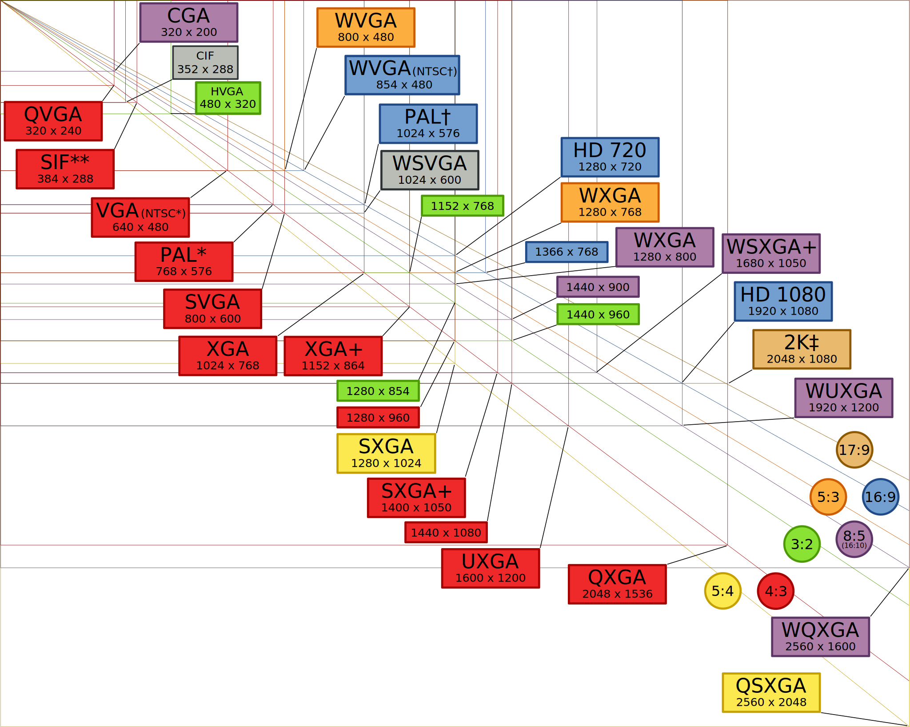

Resolutions¶
It is important to know the common used display, video and image resolutions.
Acronym |
Aspect Ration |
Width x Height (px) |
Usage |
|---|---|---|---|
QVGA |
4:3 |
320 x 240 |
|
VGA |
4:3 |
640 x 480 |
|
NTSC |
3:2 |
720 x 480 |
Television |
PAL |
4:3 |
768 x 576 |
Television |
SVGA |
4:3 |
800 x 600 |
|
WSVGA |
17:10 |
1024 x 600 |
|
XGA |
4:3 |
1024 x 768 |
|
XGA+ |
4:3 |
1152 x 864 |
|
WXGA |
16:9 |
1280 x 720 |
HD720 |
WXGA |
5:3 |
1280 x 768 |
|
WXGA |
16:10 |
1280 x 800 |
|
SXGA- |
4:3 |
1280 x 960 |
|
SXGA |
5:4 |
1280 x 1024 |
|
SXGA+ |
4:5 |
1400 x 1050 |
|
HD |
~16:9 |
1360 x 768 |
|
HD |
~16:9 |
1366 x 768 |
|
WXGA+ |
16:10 |
1440 x 900 |
|
HD+ |
16:9 |
1600 x 900 |
|
UXGA |
4:3 |
1600 x 1200 |
|
WSXGA+ |
16:10 |
1680 x 1050 |
|
FHD |
16:9 |
1920 x 1080 |
HD1080 |
WUXGA |
16:10 |
1920 x 1200 |
|
2K |
17:5 |
2048 x 1080 |
|
QXGA |
4:3 |
2048 x 1536 |
|
WQHD |
16:9 |
2560 x 1440 |
|
WQXGA |
8:5 |
2560 x 1600 |
|
QFHD |
16:9 |
3840 x 2160 |
|
4K |
17:5 |
4096 x 2160 |
|
18M |
3:2 |
5184 × 3456 |
Canon 600D |
